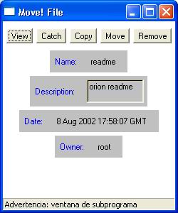
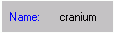
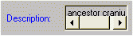
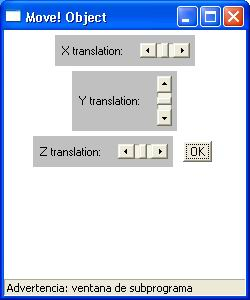
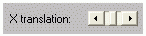

3.15.3 Funcionamiento del modelo Object
La representaci�n del modelo object dentro del entorno 3D ser� la misma que la del objeto que hemos subido al Place.
Para poder acceder al control del modelo object solo tendremos que clicar sobre �l y nos aparecer� la siguiente ventana:

 Permite coger el objeto, en el caso de que se trate de un objeto "Cogible", y llevarlo a otro sitio dentro del mismo Place
Permite coger el objeto, en el caso de que se trate de un objeto "Cogible", y llevarlo a otro sitio dentro del mismo Place
Permite coger una copia del objeto, en el caso de que se trate de un objeto "copiable". Esta copia se guarda dentro la mochila
 Elimina el objeto del Place. Cuando eliminamos un objeto tambi�n desaparecer�n todas las copias que tengamos de �l en la mochila.
Elimina el objeto del Place. Cuando eliminamos un objeto tambi�n desaparecer�n todas las copias que tengamos de �l en la mochila.
NOTA: S�lo el usuario que ha creado el objeto y un administrador podr� eliminarlo.

Nombre que tiene el objeto
Descripci�n del objetoFecha en la cual ha sido creado
Propietario del objeto
Permite modificar la posici�n actual en la que se encuentra el objeto dentro el Place. Cuando pulsamos este bot�n nos aparecer� una nueva ventana de control:


Permite mover el objeto sobre el eje de coordenadas X del entorno 3DNOTA: S�lo el usuario que ha creado el objeto y un administrador podr� moverlo.